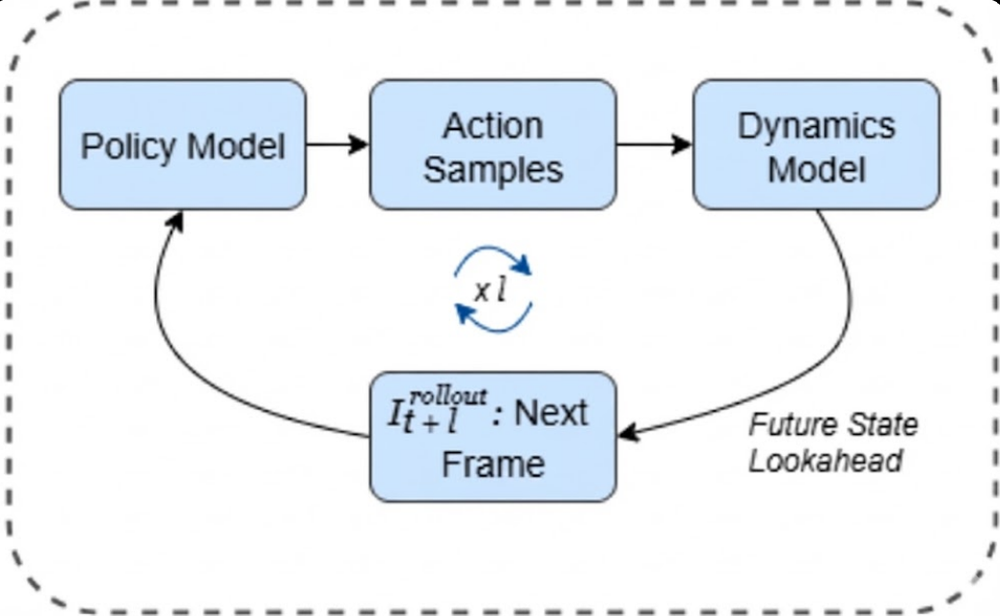
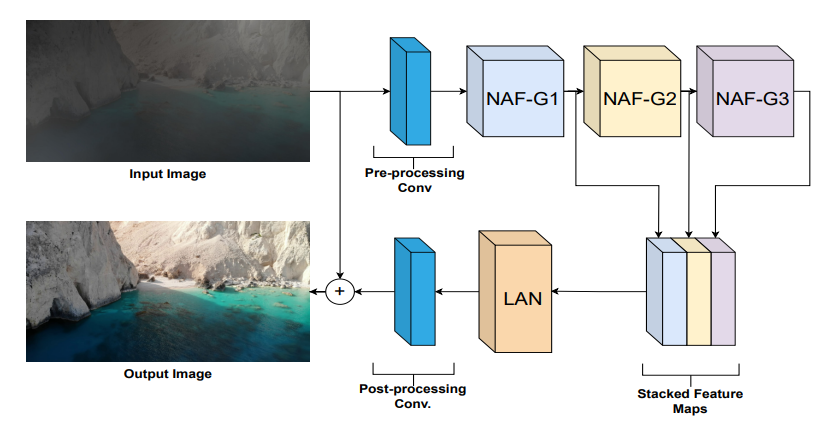
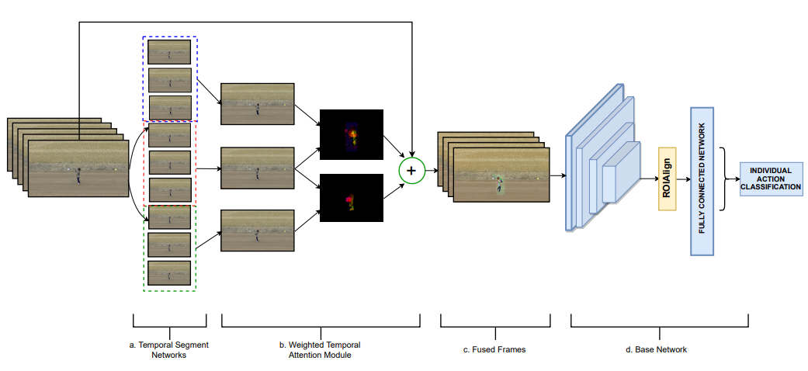
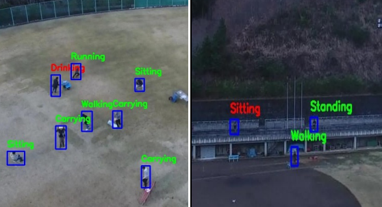
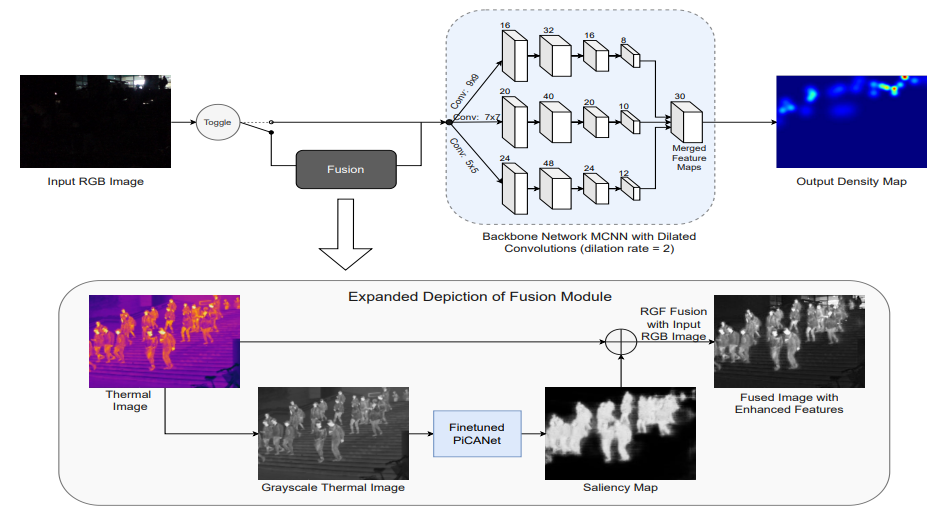
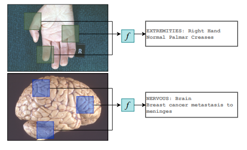
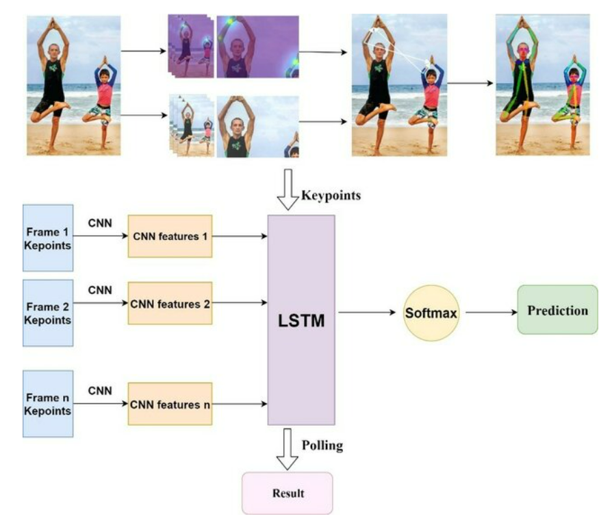
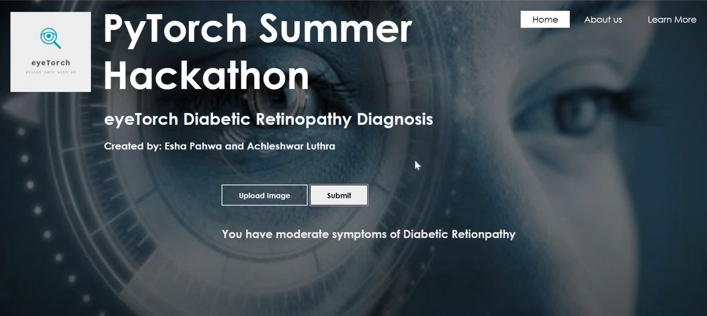

|
Esha Pahwa
I am currently working as an AI Software Engineer at Corvic AI, where I build and deploy production-grade LLM and retrieval-based agentic systems for enterprise applications, with a focus on grounded generation, evaluation, and system reliability. I am an MS in Machine Learning (MSML) graduate from Carnegie Mellon University. Previously, I was a Member of Technical Staff at Adobe, and a Research Associate at Google Research India in the Shopping Ads team, where I worked on large-scale product retrieval and ranking using JAX, mentored by Gaurav Srivastava and Prateek Jain.
My research background spans computer vision, multimodal learning, and representation learning. I conducted research at Adobe Research with Balaji Krishnamurthy on lookalike modeling and segmentation, and worked on image restoration and super-resolution with Prof. Pratik Narang (IISc) and the VCG Group at Harvard University under Prof. Hanspeter Pfister, mentored by Salma Abdel Magid. I have publications at venues including NeurIPS workshops, AAAI, and ICCV.
Email /
CV /
Google Scholar /
Linkedin /
Github
|
|
News
Dec 2025
Graduated with an M.S. in Machine Learning from Carnegie Mellon University.
April 2025
Selected as a Finalist at the Google DeepMind AI Agents Hackathon.
Jun 2023
Graduated from BITS Pilani with a B.E. in Computer Science and an M.Sc. in Chemistry.
Jan 2022
Received the Adobe Women-in-Tech Scholarship in recognition of academic and technical excellence.
Oct 2021
Awarded the Grace Hopper Celebration Scholarship.
|
Research
I'm interested in computer vision, natural language processing, and machine learning. Much of my research is based on the applications of these topics in real-world scenarios.
|
|

|
SITCOM: Scaling Inference-Time COMpute for VLAs
Ayudh Saxena*
Sandeep Routray*
Rishi Rajesh Shah*
Esha Pahwa*
NeurIPS 2025 Workshop
paper / bibtex
SITCOM augments pretrained Vision-Language-Action models with model-based rollouts and reward-guided planning at inference time, enabling robust long-horizon control. This approach improves task success from 48% to 72% in simulated robotic environments.
|
|

|
LVRNet: Lightweight Image Restoration for Aerial Images under Low Visibility (Student Abstract)
Esha Pahwa*,
Achleshwar Luthra*
Pratik Narang
AAAI 2023 (Oral Presentation)
paper / project page / poster / slides / code / bibtex
We generate the LowVis-AFO dataset, containing 3647 paired dark-hazy and clear images. We also introduce a new lightweight deep learning model called Low-Visibility Restoration Network (LVRNet)
|
|

|
SWTA: Sparse weighted temporal attention for drone-based activity recognition
Santosh Kumar Yadav,
Esha Pahwa,
Achleshwar Luthra,
Kamlesh Tiwari,
Hari Mohan Pandey
International Joint Conference on Neural Networks (IJCNN), 2023
paper / bibtex
We propose a novel Sparse Weighted Temporal Attention (SWTA) module to utilize sparsely sampled video frames for obtaining global weighted temporal attention. The SWTA network can be used as a plug-in module to the existing deep CNN architectures, for optimizing them to learn temporal information by eliminating the need for a separate temporal stream.
|
|

|
DroneAttention: Sparse weighted temporal attention for drone-camera based activity recognition
Santosh Kumar Yadav,
Achleshwar Luthra,
Esha Pahwa,
Kamlesh Tiwari,
Heena Rathore,
Hari Mohan Pandey,
Peter Corcoran
Neural Networks 2023 (Journal Paper)
paper / bibtex
This is the extended version of the study conducted for the proposed SWTA network. It contains a detailed survey of the existing approaches with an elaborate explanation of the SWTA network and its components.
|
|

|
Conditional RGB-T Fusion for Effective Crowd Counting
Esha Pahwa*,
Achleshwar Luthra*,
Sanjeet Kapadia*,
Shreyas Sheeranali*
IEEE ICIP 2022 (Poster Presentation)
paper / poster / talk / code / bibtex
We introduce a novel architecture Toggle-Fusion Network (TFNet) that effectively utilises a multimodal dataset, RGBT-CC, containing pairs of thermal and RGB images.
|
|

|
Medskip: Medical report generation using skip connections and integrated attention
Esha Pahwa*,
Dwij Mehta*,
Sanjeet Kapadia*,
Devansh Jain*
Achleshwar Luthra
ICCV: CVAMD Workshop 2021 (Poster Presentation)
paper / poster / bibtex
We propose a novel architecture of a modified HRNet which includes added skip connections along with convolutional block attention modules (CBAM). We evaluate
our model on two publicly available datasets, PEIR Gross and IU X-Ray.
|
|

|
Yoga Pose Estimation
This project was completed in collaboration with CSIR-CEERI. Utilized OpenPose API to extract precise joint coordinates from video datasets. An LSTM-based model trained on raw joint coordinate data,
optimizing the training process for accurate yoga pose prediction due to the unprocessed nature of the input data.
code
|
|

|
eyeTorch: Diabetic Retinopathy Detection
Participated in Pytorch Summer Hackathon 2020 with my batchmate Achleshwar Luthra. We used
a pre-trained AlexNet model for classifying if the patient had the aforementioned disease or not through the image of their eye. The model
was later deployed using Flask framework.
code / hackathon blog
|
Borrowed from Jon Barron website's source code. Do not scrape the HTML from this page itself, as it includes analytics tags that you do not want on your own website — use the github code instead. Also, consider using Leonid Keselman's Jekyll fork of this page.
|
|
{kind=link}